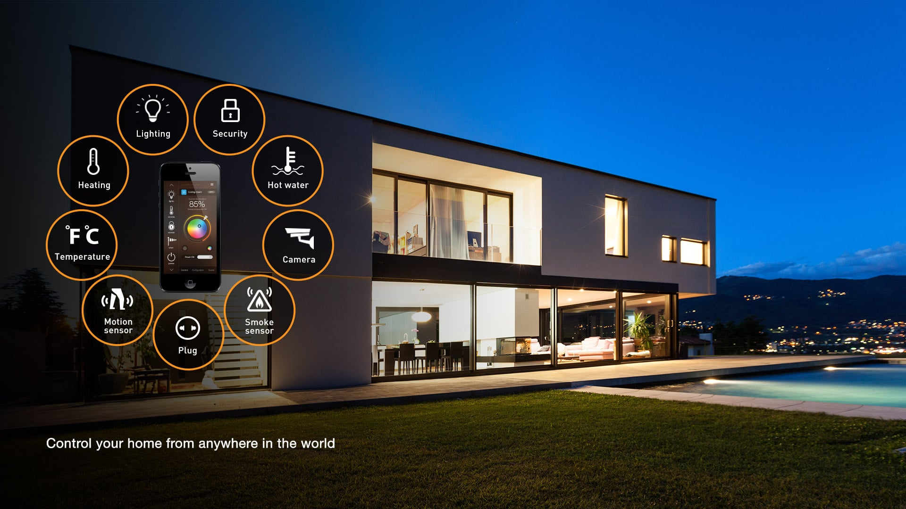

"Yapay Zeka Tabanlı Ev Yardımcısı, Ev Yaşamını Kolaylaştırıyor"
15 Kasım 2023 - Son teknoloji ürünü SmartAssist, ev otomasyonunda bir devrim yaratıyor. Bu yenilikçi
yapay zeka tabanlı ev yardımcısı, kullanıcıların günlük yaşamlarını kolaylaştırmak amacıyla tasarlanmış
geniş bir özellik setine sahip.
SmartAssist, evin enerji tüketimini optimize etmek ve kullanıcının alışkanlıklarını öğrenerek ısı ve
aydınlatma sistemlerini otomatik olarak ayarlamak gibi temel görevleri üstleniyor. Ayrıca, sesli
komutları anlama yeteneği ve doğal dil işleme özellikleri sayesinde kullanıcılarla doğal bir etkileşim
sağlıyor.SmartAssist'in üretici firmasının açıklamasına göre, bu cihaz teknolojiyi ev yaşamına sorunsuz
bir şekilde entegre etmeyi amaçlıyor. SmartAssist, kullanıcıların evlerini daha konforlu ve verimli hale
getirmek için tasarlanmış birinci sınıf bir akıllı ev çözümü sunuyor.

"Yeni Nesil Sanal Gerçeklik Gözlüğü, Gerçek Dünya ile İç İçe Geçiyor"
Teknoloji dünyası, sanal gerçeklik alanında bir dönüm noktasına tanıklık ediyor. Yeni nesil bir sanal
gerçeklik gözlüğü olan "VirtuX" bugün piyasaya sürüldü ve kullanıcılarına gerçek dünya ile sanal dünyayı
birleştiren eşsiz bir deneyim sunuyor.
VirtuX, gelişmiş sensör ve kameralarla donatılmış, hafif ve şık bir tasarıma sahip. Bu gözlük,
kullanıcının fiziksel çevresini algılamak ve sanal objeleri gerçek dünya ile entegre etmek için gelişmiş
bir artırılmış gerçeklik (AR) teknolojisini kullanıyor.
Kullanıcılar, VirtuX'i takarak gerçek dünyada dolaşabilirken, gözlükleri sayesinde sanal objeleri ve
bilgileri gerçek dünyanın üzerine yerleştirebilirler. Örneğin, bir restoranın menüsünü gözlükleri
kullanarak kontrol edebilir veya sokakta yürürken önemli bilgileri anında alabilirler.
"Hologram Konserler, Sanatı Yeni Bir Boyuta Taşıyor"
Sanat ve teknoloji, bir araya gelerek müzik dünyasında çığır açan bir gelişmeye imza atıyor. Ünlü pop
yıldızı Ava Harmony, dünyanın dört bir yanındaki hayranlarına hologram konserlerle seslenmeye
hazırlanıyor.
Ava Harmony'nin "HoloHarmony" adını verdiği bu özel konser serisi, holografik teknolojiyi kullanarak
sanatçının gerçek zamanlı olarak sanal bir sahnede performans sergilemesini sağlıyor. Hayranlar, konseri
evlerinin konforunda izleyebilecek ve sanatçıyı canlı gibi deneyimleyebilecekler.
Hologram konserler, sadece sanatçılar için değil aynı zamanda konser mekanları ve etkinlik
organizatörleri için de büyük bir avantaj sağlıyor. Bu teknoloji, fiziksel mekan sınırlamalarını ortadan
kaldırarak daha geniş bir kitleye ulaşma olanağı tanıyor.